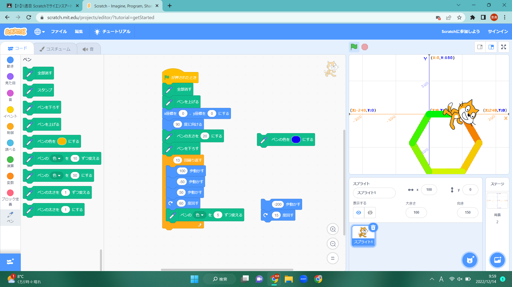
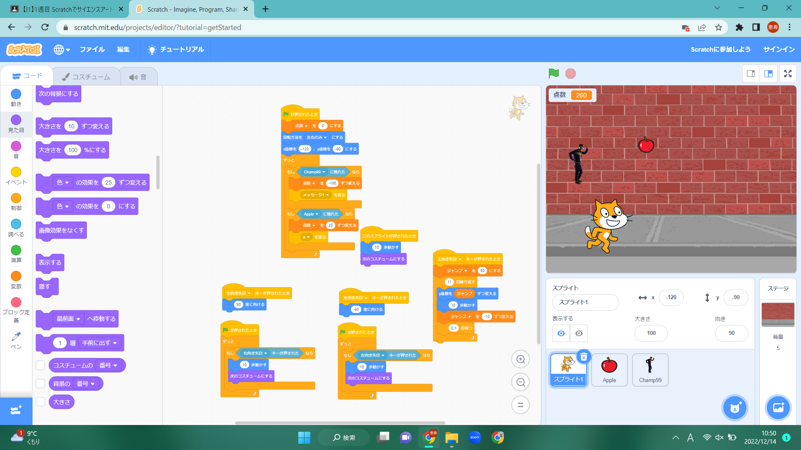

1週目のレポート ： 公大高専１年実習I-1
2B班31番 kotbck
第1週目
1-1 サイエンスアート

1.内容
スクラッチを使って線を書くプログラムを組んで様々な図形を描いた。
ペンの太さや色、進方向や角度などを変えて自分の描きたい図形を描いた。
2.感想
感想を自分で書く。スクラッチは触ったことがあったが、それで絵を描いたことが無かったのでとても面白かった。
思い通りの図形を描くのに角度や距離の情報が必要だったため、数学の力がないと少し難しいと感じた。
1-2 ゲーム

1.内容
スクラッチを使用して、降ってくるリンゴを猫がキャッチするゲームを作った。
リンゴの降ってくる位置やスピードをランダムにする方法を学んだ。 2.感想
プログラミングというと、難しいイメージがあったが、このスクラッチはとても扱いやすかった。
自分なりにカスタマイズしてみたが、とてもいい感じに出来たと思う。
1-3 ホームページ作成
私のホームページ
1.内容
GitHubを使用して自分のホームページを作成した。GitHubでのホームページの基本的な編集の仕方を学んだ。
2.感想
ホームページは自分で作ろうと思ったことが無かったので全く初めてだったが、特に難しいことはなく書き込むことが出来た。